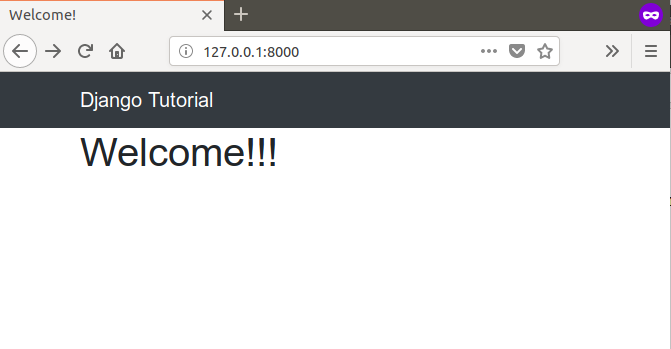

In this article, we will try to create a simple Bootstrap header in a Django Template.
Assuming that your django template page is structured like this:
<!doctype html>
<html lang="en">
<head>
<meta charset="UTF-8">
<title>{% block title %}Base HTML{% endblock title %}</title>
<link rel="stylesheet" href="https://stackpath.bootstrapcdn.com/bootstrap/4.1.1/css/bootstrap.min.css">
</head>
<body>
{% block content %}
{# Your content goes here #}
{% endblock content %}
<script src="https://ajax.googleapis.com/ajax/libs/jquery/3.3.1/jquery.min.js"></script>
<script src="https://unpkg.com/popper.js/dist/umd/popper.min.js"></script>
<script src="https://stackpath.bootstrapcdn.com/bootstrap/4.1.1/js/bootstrap.min.js"></script>
</body>
</html>we can modify it to display a header like so:
<!doctype html>
<html lang="en">
<head>
<meta charset="UTF-8">
<meta name="viewport" content="width=device-width, initial-scale=1, shrink-to-fit=no">
<title>{% block title %}Base HTML{% endblock title %}</title>
<link rel="stylesheet" href="https://stackpath.bootstrapcdn.com/bootstrap/4.1.1/css/bootstrap.min.css">
</head>
<body>
<nav class="navbar navbar-expand-sm navbar-dark bg-dark">
<div class="container">
<a class="navbar-brand" href="#">Django Tutorial</a>
</div>
</nav>
<div class="container">
{% block content %}
{# Your content goes here #}
{% endblock content %}
</div>
<script src="https://ajax.googleapis.com/ajax/libs/jquery/3.3.1/jquery.min.js"></script>
<script src="https://unpkg.com/popper.js/dist/umd/popper.min.js"></script>
<script src="https://stackpath.bootstrapcdn.com/bootstrap/4.1.1/js/bootstrap.min.js"></script>
</body>
</html>So, where our page used to look like:

Now, it looks like this!
If you want to look at some more example, I invite to you to take a look at the official example page here. Next, we are going to look at footers.